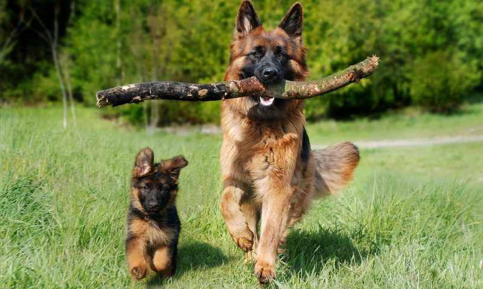
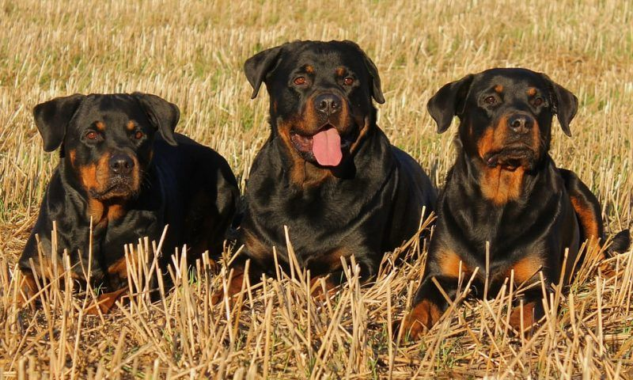
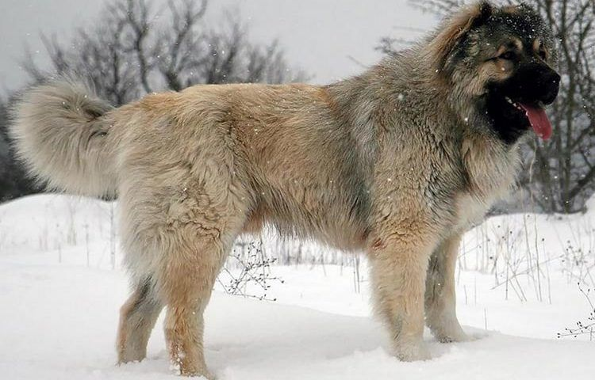
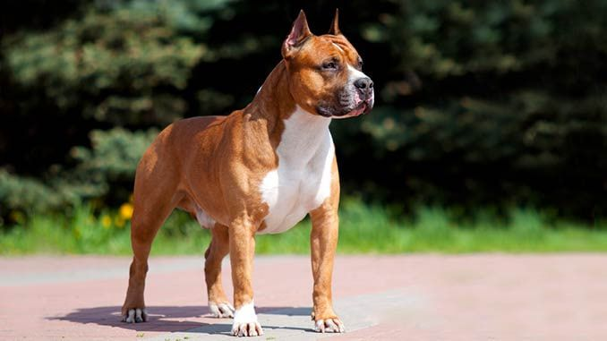
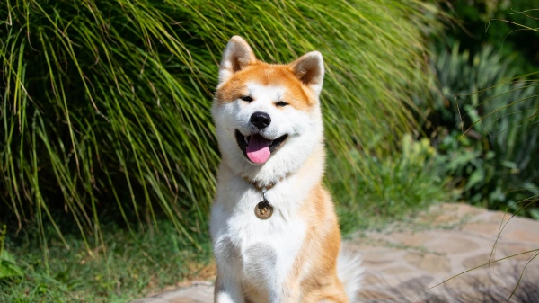

Топ-5 лучших собак для охраны дома
-
Немецкая овчарка
Как показывает многолетний опыт, немецкая овчарка — лучшая собака для охраны и защиты дома. Идеальный, легко обучаемый охранник. Собаки этой породы обладают уравновешенной психикой, отличается острым умом и превосходной реакцией. Немецкие овчарки способны работать в команде, хорошо поддаются дрессировке, выносливы и неприхотливы. Немецкие овчарки дружелюбны, легко контактирует с любым членом семьи, но к незнакомым людям относятся настороженно и держат их под постоянным наблюдением. Собак этой породы при должном воспитании можно использовать для охраны квартиры или придомовой территории.
-
Ротвейлер
Це ще одна порода собак, яка, незважаючи на свій гігантський розмір, відмінно уживається з кішками. Німецький дог – дуже спокійний, врівноважений розумний собака. Він не проявляє агресію до інших тварин, у нього відсутній мисливський інстинкт. Представники цієї породи поблажливо ставитися до котячих пустощів. У разі виявлення агресії з боку кота, дог просто відійде від нього подалі. Німецький дог – це порода для досвідчених власників, які можуть забезпечити йому достатню кількість фізичної активності та соціалізації. Ці собаки потребують просторого житла і якісного годування. Їхня шерсть не потребує особливого догляду, достатньо періодично розчісувати її та протирати вологою серветкою. Німецький дог - це вірний друг і охоронець для дому.
-
Кавказская овчарка
Многие российские кинологи считают эту породу собак лучшей для охраны жилища. Кавказские овчарки бесстрашны, уверены в себе и крайне недоверчивы к посторонним людям. Собаки этой породы требуют серьезного курса дрессировки, так как плохо воспитанная кавказская овчарка может быть опасна и для хозяина. Если не уделять ей должного внимания, держать такую собаку в тесной квартире или на цепи, она может стать агрессивной и непредсказуемой.
-
Стаффордширский терьер
Стаффорды обладают устойчивой психикой и крепким здоровьем. Они мускулисты, сильны и отважны. Отличаются преданностью к хозяину и неприятием незнакомцев. Терьер — коренастый мускулистый пес, главные преимущества характера которого смелость, устойчивость психики, крепость здоровья, преданность хозяину, а не незнакомцам. Поэтому стаффордширскому терьеру очень важно дать серьезное воспитание. Собаки этой породы крайне энергичны. Им необходимы ежедневные прогулки и тренировки.
-
Акита-ину
Акита-ину или японская собака акита — порода собак, появившаяся в провинции Акита на японском острове Хонсю, одна из шести в регистре японской кинологической организации по защите и сохранению исконно японских пород — Нихонкэн Ходзонкай. Акита-ину является крупнейшей японской собакой из шпицеобразных.